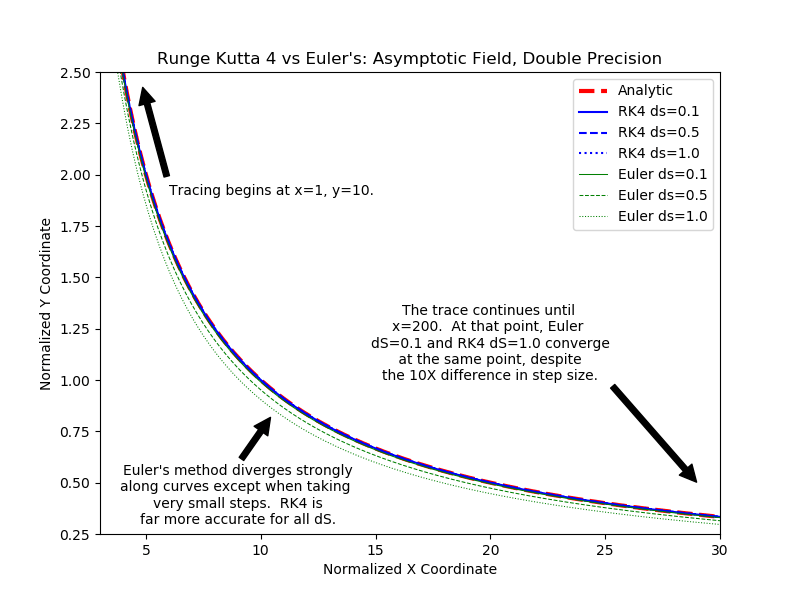
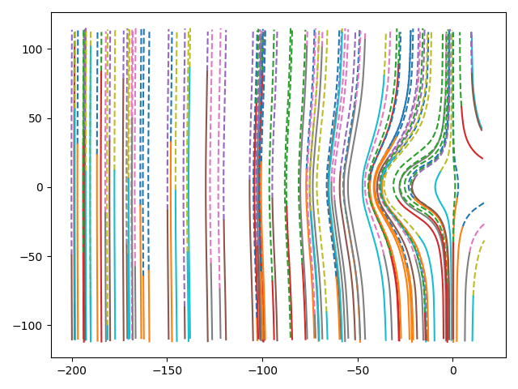
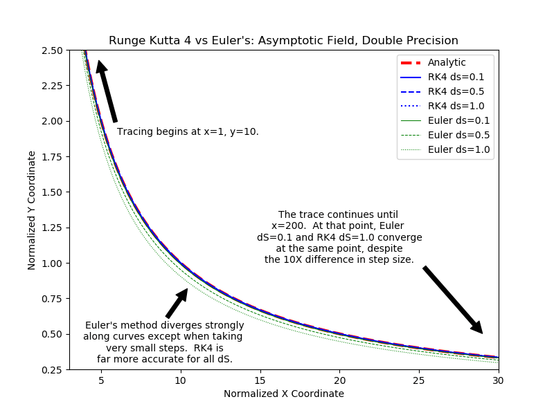
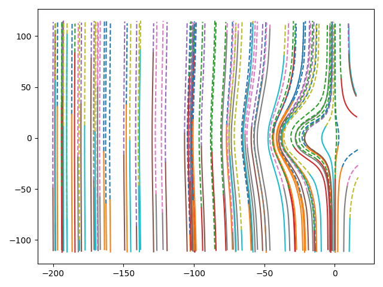

Examples
Structured 2D mesh


- Magnetic field line tracing

- Streamline tracing in a 2D Earth magnetosphere simulation
Unstructured 2D mesh



Settings
This document was generated with Documenter.jl on Tuesday 2 February 2021. Using Julia version 1.5.3.